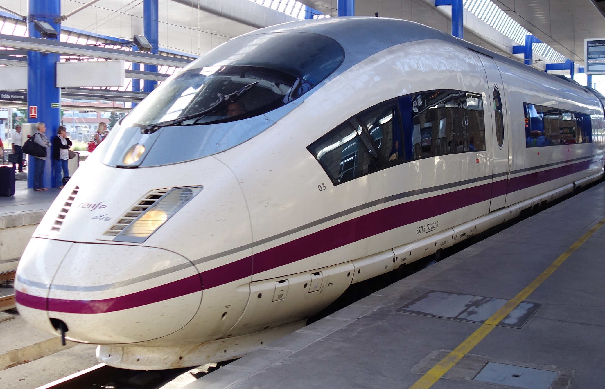
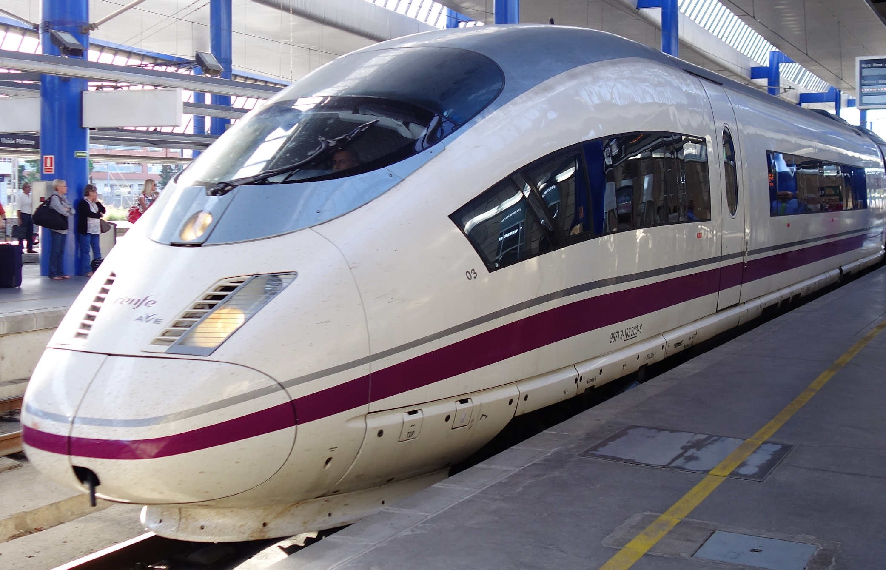

Renfe AVE 103, известен още като S-103, е свидетелство за модерната високоскоростна
железопътна мрежа на Испания, известна със своята скорост и ефективност. Пуснат през
2007 г., този елегантен влак е в състояние да достигне максимална скорост от 404 км/ч,
което го прави един от най-бързите влакове в Европа. С нормална работна скорост от
310 км/ч, AVE 103 свързва големи градове като Мадрид и Барселона, като значително
намалява времето за пътуване и подобрява регионалната свързаност.
Проектиран с мисъл за комфорта на пътниците, AVE 103 разполага с просторни седалки,
модерни удобства и тиха атмосфера, осигуряваща приятно пътуване. Неговият
аеродинамичен дизайн не само допринася за неговата впечатляваща скорост, но също
така оптимизира енергийната ефективност, привеждайки се в съответствие с целите за
устойчивост на Испания. Влакът е част от мрежата Renfe, превърнала се в модел за
високоскоростни железопътни системи в световен мащаб.
AVE 103 трансформира начина, по който испанците пътуват, предлагайки бърза и надеждна алтернатива на пътуването със самолет.